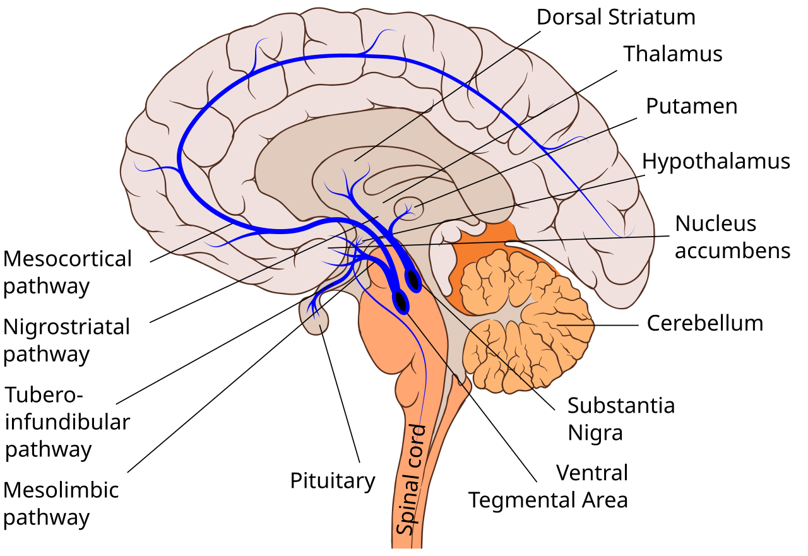

💪 Sức khỏe Nam giới
Sexology — The Science of Male Sexual DesireDeep dive⏱ 8 phút đọc
Khoa Học Ham Muốn Nam Giới: Trục Thần Kinh - Nội Tiết, Dopamine & Động Lực Sinh Học
Ham muốn tình dục ở nam giới thường bị giản lược thành một câu chuyện đơn giản về 'thừa hay thiếu testosterone'. Tuy nhiên, khoa học thần kinh hiện đại đã chứng minh: Testosterone chỉ đóng vai trò là chất 'bật công tắc' nền tảng; động cơ thực sự thôi thúc khao khát, sự chú ý và động lực săn đón lại là chất dẫn truyền thần kinh Dopamine tại vùng trần bụng (VTA) và vùng trước thị trong dưới đồi (MPOA).
Testosterone tạo ra độ nhạy cảm của các thụ thể thần kinh, nhưng Dopamine mới là chất tạo ra động lực khao khát. Khi bạn mệt mỏi, thiếu ngủ, lạm dụng chất kích thích hoặc đối mặt với sự nhàm chán, dopamine bị suy kiệt khiến ham muốn tình dục biến mất dù nồng độ testosterone trong máu hoàn toàn bình thường.
Bộ Não Mới Là Cơ Quan Tình Dục Quyền Lực Nhất
Trong nhiều thập kỷ, văn hóa đại chúng gán cho cơ quan sinh dục là trung tâm của ham muốn. Nhưng đối với các nhà sinh học thần kinh (Hull & Dominguez, Behavioral Brain Research; Pfaus, Hormones and Behavior), mọi ham muốn tình dục nam giới đều khởi nguồn và kết thúc ở một vùng não siêu nhỏ nằm sâu dưới đáy não: Vùng Trước Thị Trong (Medial Preoptic Area - MPOA) thuộc vùng dưới đồi.
Trục ham muốn vận hành theo cơ chế hợp đồng sinh học giữa hai nhân tố:
1. Testosterone (Chất Mở Khóa - The Primer): Testosterone đi qua hàng rào máu não, chuyển hóa một phần thành Dihydrotestosterone (DHT) và Estradiol nhờ các enzyme nội sọ. Chúng gắn vào các thụ thể Androgen tại vùng MPOA, kích thích tăng sinh enzyme Nitric Oxide Synthase (nNOS) trong não. Đây là điều kiện "cần" để não bộ sẵn sàng tiếp nhận kích thích.
2. Dopamine (Động Cơ Thôi Thúc - The Spark): Khi gặp kích thích thị giác, khứu giác hoặc cảm xúc tình dục, vùng VTA sẽ phóng thích một lượng lớn Dopamine vào MPOA và thể vân (Nucleus Accumbens). Dopamine tạo ra cảm giác rạo rực, thôi thúc hành động kiếm tìm, tăng nhịp tim và dồn sự chú ý 100% vào đối tượng.
Không có Dopamine, testosterone cao đến mấy cũng không thể sinh ra ham muốn!

📊 Các con đường dẫn truyền dopamine trong não bộ: Trục trung não - viền từ VTA đến nhân accumbens chỉ huy động lực tìm kiếm phần thưởng và ham muốn tình dục.(Link sơ đồ y khoa gốc ↗)
3 Kẻ Thù Thầm Lặng Đập Tan Dopamine & Ham Muốn Nam Giới
Yếu Tố Triệt Tiêu
Cơ Chế Tác Động Lên Não Bộ
Hậu Quả Lâm Sàng Trên Bản Lĩnh
Bão Hòa Dopamine Do Phim Ảnh Khiêu Dâm (Porn-Induced Desensitization)
Kích thích siêu thường xuyên (Supernormal Stimulus) làm chai lỳ thụ thể Dopamine D2; hạch nền bị quá tải.
Gặp khó khăn hưng phấn với bạn tình thực tế; xuất hiện hội chứng PIED (Porn-Induced Erectile Dysfunction).
Hội Chứng Kiệt Quệ Thần Kinh (Burnout & Chronic Stress)
Nồng độ Cortisol và Prolactin tăng cao; Serotonin tăng bất thường ức chế ngược dòng phóng thích Dopamine.
Mất hoàn toàn sự hứng thú phòng the; cảm giác vô cảm và mệt mỏi thể chất kéo dài.
Thiếu Ngủ Kéo Dài (High Sleep Debt)
Vùng dưới đồi ưu tiên điều phối năng lượng cho sự sống còn; thụ thể D2 tại thể vân giảm hơn 20% chỉ sau 1 đêm mất ngủ.
Điểm Recovery trên thiết bị đeo rơi vào vùng đỏ; ham muốn buổi sáng sụp đổ.
Sự Tương Tác Giữa Dopamine, Serotonin & Prolactin
Khoái cảm tình dục nam giới vận hành theo một chiếc bập bênh thần kinh hoàn hảo:
- Dopamine: Đẩy ham muốn lên cao trào.
- Serotonin & Prolactin: Là chất phanh hãm sinh học. Ngay sau khi xuất tinh, não bộ phóng thích một lượng lớn Prolactin để đưa cơ thể vào trạng thái thỏa mãn và bước vào thời kỳ trơ sinh lý (Refractory Period).
- Lưu ý quan trọng: Những người sử dụng thuốc chống trầm cảm nhóm SSRI (làm tăng nồng độ Serotonin trong não) thường bị tác dụng phụ mất ham muốn và khó xuất tinh, chính là do sự ức chế tự nhiên của Serotonin lên con đường Dopamine.
Giao Thức 4 Bước Tối Ưu Hóa Trục Ham Muốn Não Bộ
Cai Nghiện Kích Thích Thị Giác Nhân Tạo (Dopamine Fasting): Ngừng xem các nội dung khiêu dâm và cắt giảm thời gian lướt video ngắn (TikTok/Reels) trong 3–4 tuần. Việc loại bỏ kích thích siêu ngưỡng giúp các thụ thể Dopamine D2 phục hồi độ nhạy cảm nguyên bản với đối tác đời thực.
Bảo Đảm Điểm Phục Hồi (Recovery Score) Vùng Xanh: Chỉ khi cơ thể ở trạng thái phục hồi tốt (HRV cao, nhịp tim nghỉ thấp), vùng dưới đồi mới giải phóng các xung GnRH đều đặn kích hoạt ham muốn.
Bổ Sung L-Tyrosine & Kẽm: L-Tyrosine là amino axit tiền chất trực tiếp để cơ thể tổng hợp Dopamine và Noradrenaline; dùng 500–1.000mg vào buổi sáng khi cần tăng cường sự tập trung và động lực.
Tạo Sự Mới Mẻ Trong Bối Cảnh Hẹn Hò: Dopamine được kích hoạt mạnh nhất bởi yếu tố mới lạ (Novelty). Thay đổi không gian hẹn hò, đi du lịch xa hoặc cùng nhau tham gia một môn thể thao mạo hiểm giúp kích hoạt dòng thác dopamine tự nhiên cho cả hai người.
Volkow, N. D., et al. (2012).Evidence that sleep deprivation downregulates dopamine D2R in ventral striatum in the human brain. Journal of Neuroscience, 32(19), 6711–6717. Tạp chí JNeurosci (PMID: 22573693) ↗
Corona, G., et al. (2013).Hypogonadism as a risk factor for cardiovascular disease. Nature Reviews Urology, 10(9), 541–550. Tạp chí Nature (PMID: 23880854) ↗
📚
Nguồn Tham Khảo Y Khoa & Nghiên Cứu Gốc
Bài viết này được tổng hợp và kiểm chứng từ các nghiên cứu y sinh học, hướng dẫn lâm sàng và tài liệu khoa học thiết bị đeo của Behavioral Brain Research & Annual Review of Sex Research.
💪 Men's Health
Sexology — The Science of Male Sexual DesireDeep dive⏱ 8 min read
The Science of Male Sexual Desire: The Neuroendocrine Axis, Dopamine & Drive
Male sexual desire is frequently oversimplified as merely a function of circulating testosterone. Yet modern cognitive neuroscience reveals that while androgens prime the neural substrate, the real motivational engine driving anticipation, focused pursuit, and erotic craving is the mesolimbic dopamine system operating via the medial preoptic area (MPOA) of the hypothalamus.
Testosterone sensitizes central receptors, but dopamine generates the motivational neuro-drive. In the presence of chronic sleep debt, burnout, or sensory oversaturation, depleted dopamine stores extinguish sexual desire even when circulating serum testosterone levels are clinically flawless.
The Brain as the Master Sex Organ
For decades, male sexual desire was lazily attributed to gonadal anatomy. Yet cognitive neurobiologists (Hull & Dominguez, Behav Brain Res; Pfaus, Horm Behav) demonstrate that all male lust originates within a tiny cluster of neurons: the Medial Preoptic Area (MPOA) of the hypothalamus.
Desire operates as a biological partnership between two distinct forces:
1. Testosterone (The Receptor Primer): Crosses the blood-brain barrier, converting locally into DHT and Estradiol to upregulate neuronal Nitric Oxide Synthase (nNOS) within the MPOA. This primes the neural substrate to receive erotic input.
2. Dopamine (The Motivational Spark): In response to sensory or romantic cues, the Ventral Tegmental Area (VTA) releases pulses of Dopamine into the nucleus accumbens and MPOA. Dopamine generates craving, forward pursuit, and laser-like focus on the erotic target.
Without dopamine, even supranormal testosterone cannot ignite desire!
📊 Central dopaminergic pathways: Mesolimbic projection from the ventral tegmental area to the nucleus accumbens drives sexual motivation and anticipatory arousal.(Original Scientific Figure Source ↗)
Inability to achieve arousal with real-world partners; Porn-Induced Erectile Dysfunction (PIED).
Chronic Burnout & Endocrine Exhaustion
Elevated cortisol and prolactin inhibit upstream dopamine release while upregulating serotonin brakes.
Complete loss of erotic appetite; general anhedonia and systemic fatigue.
High Cumulative Sleep Debt
Striatal D2 receptor availability plunges by >20% after just 1 night of sleep restriction.
Wearable displays red recovery; morning vigor and spontaneous desire evaporate.
The Seesaw: Dopamine, Serotonin, and Prolactin
Male sexual desire rests on a neurochemical see-saw:
- Dopamine: Drives craving and arousal upward.
- Serotonin & Prolactin: Act as biological brakes. Following ejaculation, the pituitary surges Prolactin to terminate dopamine and enforce the refractory period.
- Clinical Pearl: Men taking SSRIs (which boost central serotonin) frequently experience blunted libido and delayed orgasm due to serotonin's natural dampening effect on dopamine release.
4-Step Practical Protocol for Neuroendocrine Libido Optimization
Execute a 30-Day Digital Dopamine Reset: Abstain from explicit pornographic media and endless short-form video doomscrolling for 4 weeks to resensitize striatal D2 receptors to real-world intimacy.
Guard Green Recovery Scores: High HRV and low resting heart rates signal to the hypothalamus that energy is abundant, permitting regular GnRH pulses that sustain desire.
Supplement L-Tyrosine and Zinc: L-Tyrosine acts as the immediate amino acid precursor for dopamine synthesis; 500–1,000mg in the morning boosts motivation.
Infuse Relational Novelty: Dopamine thrives on novel sensory stimuli. Change your dating routine, travel to unfamiliar settings, or engage in physical adventure together to naturally reignite shared erotic spark.
Clinical References & Scientific Sources
Hull, E. M., & Dominguez, J. M. (2007).Sexual behavior in male rodents. Hormones and Behavior, 52(1), 45–55. View on PubMed ↗
Pfaus, J. G. (2009).Pathways of sexual desire. The Journal of Sexual Medicine, 6(6), 1506–1533. View on PubMed ↗
Volkow, N. D., et al. (2012).Sleep deprivation downregulates dopamine D2R in ventral striatum in the human brain. J Neurosci, 32(19), 6711–6717. View on JNeurosci ↗
Corona, G., et al. (2013).Hypogonadism as a risk factor for cardiovascular disease. Nat Rev Urol, 10(9), 541–550. View on Nature ↗
📚
Clinical Reference & Scientific Backing
This article is synthesized from peer-reviewed medical literature, clinical guidelines, and wearable biometric validation studies from Behavioral Brain Research & Annual Review of Sex Research.